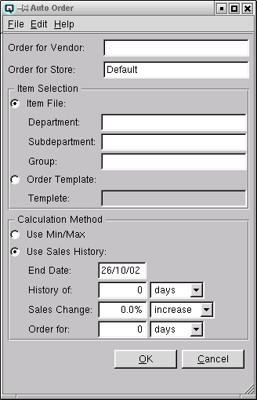

Auto Order

Use the auto order screen to create automatic purchase orders based on
the minimum and maximum quantity levels of an inventory item or on the
actual sales history of an inventory item.
NOTE: IT IS RECOMMENDED THAT ALL AUTOMATIC ORDERS BE REVIEWED MANUALLY
PRIOR TO PLACEMENT.
Order for Vendor
Enter the Vendor to whom the automatic order will be placed.
Order for Store
Enter the store for which the order is being created.
Item Selection
-
- Item File - Toggle on to place the order from the item
file
-
- Department - Enter the department to order.
- Subdepartment - Enter the subdepartment to order.
- Group - Enter the group to order.
- Order Template - Toggle on to place the order from a
purchase order template. Auto orders by template will be created with
exactly the same numbers and in exactly the same order as the template.
-
- Template - Enter the template to order.
Calculation Method
-
- Use Min/Max - Toggle on to calculate order quantities
using the min/max levels defined in the inventory item master.
- Use Sales History - Toggle on to calculate order quantities
using the sales history of an item.
-
- End Date - Enter the end date for the sales history
period. For example, if you wanted to use the period between Nov. 1st
and Dec. 31st as your sales history period, you would enter Dec. 31st as
the end date.
- History of - Enter the number of days, weeks or months
for the sales history period. For example, if you wanted to use the
period between Nov. 1st and Dec. 31st your could enter a history of 60
days, 8 weeks or 2 months.
- Sales Change - Enter the expected percentage increase or
decrease in sales.
- Order for - Enter the number of days, weeks or months that
you wish to order for. For example, if you wish to order stock for 2
weeks usage you would enter "2" and select "Weeks". Alternatively, you
could enter "14" and select "Days".